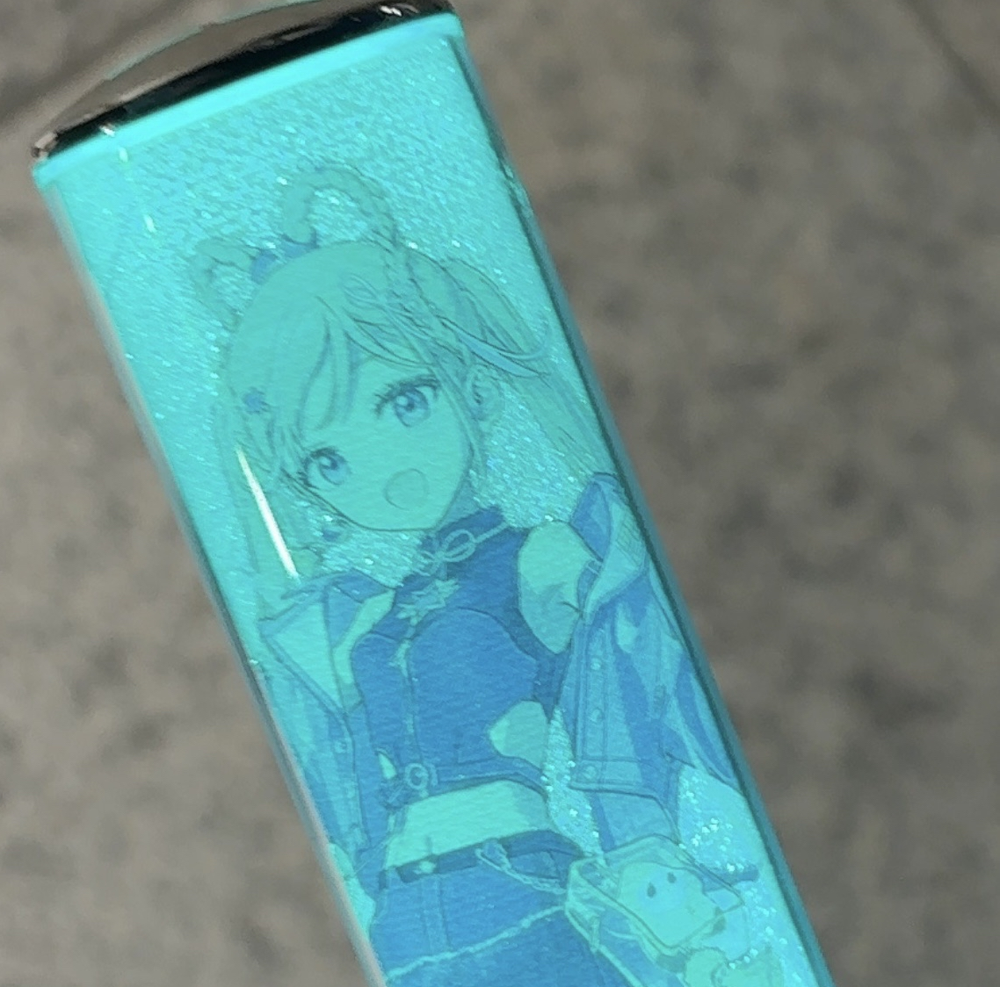

テスト。写真も貼れる。これは2025マジミラのペンライト。（2025/11/26）
動画テスト。
動画はファイルサイズが大きいので制限が怖いです。ラストリモートのアコースティックアレンジ。（2025/11/26）
テストテキストメモ。
ここのメモ帳を作るのはとても大変でした。
ここはちょっとした忘備録にも使えそうですし、端末によると思いますがちょうど140字くらいに収まると見た目的にもいい感じになりそうです。レイアウトが崩れないかとても心配。更新するまでのハードルが高いけれどTwitterの呟きの代わりにも使えそうです。（2025/11/26）